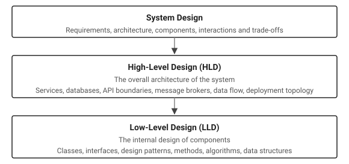
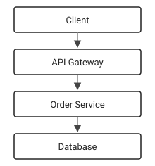
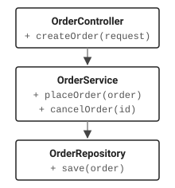
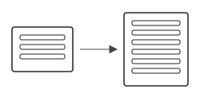
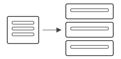
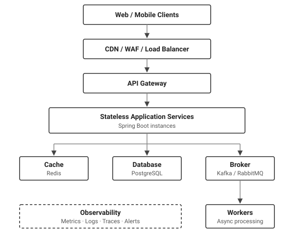
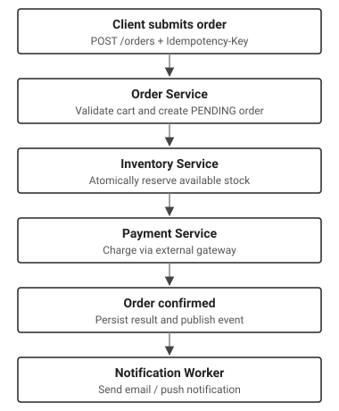
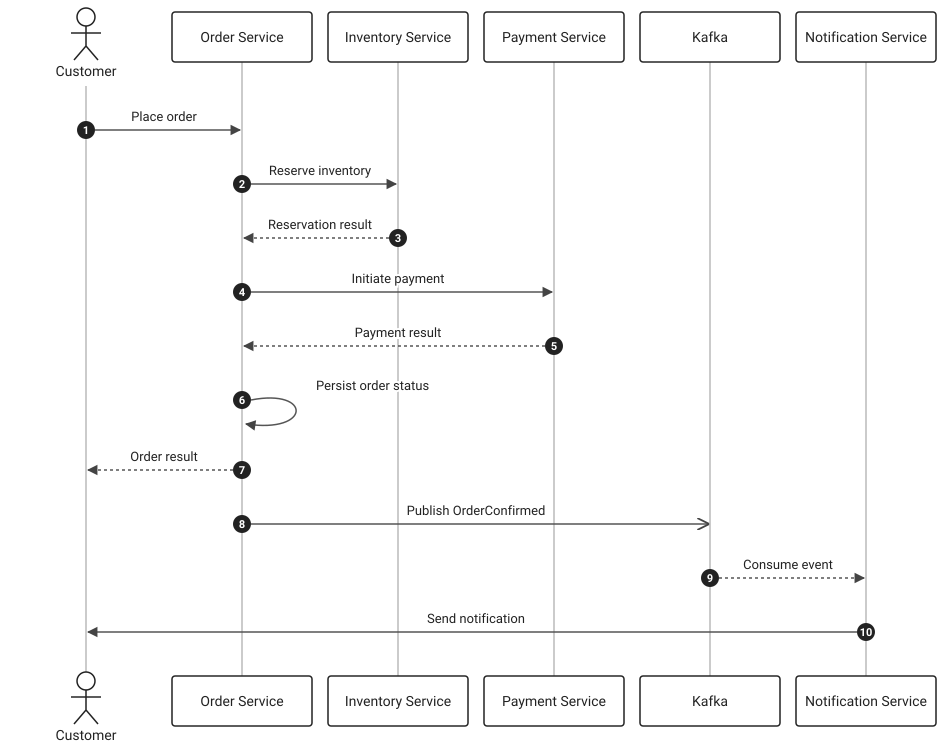

System Design is one of the most important areas of software engineering. It focuses on how to design software systems that are scalable, reliable, available, secure, maintainable and cost-effective.
System Design is the process of defining how a software system should be structured, how its components interact, how data flows through it and how it meets functional and non-functional requirements.
System Design bridges the gap between business requirements and technical implementation.
System Design is the process of defining a software system's architecture, components, data models, interfaces, communication mechanisms and infrastructure to satisfy specified functional and non-functional requirements.
System Design answers questions such as:
For example, imagine building an e-commerce application similar to Amazon.
You need to determine how customers will browse products, how inventory is managed, how payments are processed, how orders are tracked and how the system continues functioning during heavy traffic or infrastructure failures.
These decisions belong to System Design.
| Objective | Meaning |
|---|---|
| Scalability | Handle increasing users, requests and data |
| Availability | Keep the system accessible |
| Reliability | Perform operations correctly and consistently |
| Performance | Achieve acceptable response times and throughput |
| Consistency | Maintain appropriate data correctness across components |
| Fault tolerance | Continue functioning despite component failures |
| Resilience | Recover and adapt when failures occur |
| Security | Protect data, services and access |
| Maintainability | Make the system easier to modify and debug |
| Extensibility | Support new features with minimal disruption |
| Cost efficiency | Use infrastructure resources economically |
| Observability | Understand internal system behavior through telemetry |
These objectives often conflict. For example, increasing availability by running services in multiple regions may increase cost and operational complexity. Good system design finds an appropriate balance.
| Aspect | System Design | Software Architecture | Software Design |
|---|---|---|---|
| Focus | End-to-end system | Overall structural organization | Internal implementation |
| Scope | APIs, data, infrastructure, integrations, operations | Services, layers, boundaries, communication | Classes, interfaces, algorithms, modules |
| Decisions | Scaling, storage, reliability, deployment | Monolith vs microservices, event-driven, layered | Design patterns, OOP, SOLID |
| Example | Design an e-commerce platform | Choose microservices and event-driven integration | Implement a payment strategy pattern |
These fields overlap significantly. Software architecture is a major part of system design and software design supports both.

What components exist and how they interact

Concerned with services, databases, networks, integration, infrastructure and scalability.
How individual components are implemented

Concerned with classes, interfaces, methods, data structures, design patterns and algorithms.
For example, HLD decides that an Order Service communicates with a Payment Service using events. LLD defines the Java classes, methods, interfaces, repositories and event handlers that implement this behavior.
This is the main conceptual map of the subject.
| Area | Important concepts |
|---|---|
| Requirements Engineering | Functional requirements, non-functional requirements, constraints, assumptions |
| Architecture | Monolith, layered, microservices, SOA, event-driven, serverless, distributed systems |
| Networking | TCP/IP, HTTP/HTTPS, DNS, TLS, REST, gRPC, WebSocket |
| Communication | Synchronous, asynchronous, request-response, messaging, pub/sub |
| Load Distribution | Load balancing, reverse proxy, API Gateway, service discovery |
| Scalability | Vertical scaling, horizontal scaling, partitioning, sharding, replication |
| Data Management | SQL, NoSQL, transactions, indexes, replication, sharding, consistency |
| Caching | Cache layers, eviction, invalidation, TTL, caching strategies |
| Messaging | Queues, streams, Kafka, RabbitMQ, ordering, delivery guarantees |
| Distributed Systems | CAP theorem, consensus, distributed transactions, coordination, clocks |
| Reliability | Redundancy, failover, retries, circuit breakers, disaster recovery |
| Performance | Latency, throughput, concurrency, capacity planning, bottlenecks |
| Security | Authentication, authorization, encryption, rate limiting, zero trust |
| Observability | Logging, metrics, tracing, monitoring, alerting |
| Deployment | Containers, Kubernetes, cloud, CI/CD, autoscaling, infrastructure |
| Design Patterns | CQRS, Saga, Event Sourcing, Outbox, Bulkhead, Idempotency |
Each area contains multiple concepts, technologies, patterns and trade-offs.
Fundamental System Design concepts
The following concepts form the foundation of modern system design.
| Concept | Meaning | Common techniques |
|---|---|---|
| Scalability | Ability to accommodate growth | Horizontal/vertical scaling |
| Availability | Fraction of time a system is usable | Replication, failover |
| Reliability | Ability to provide correct service over time | Retries, redundancy, fault handling |
| Latency | Time taken to complete an operation | Caching, indexing, fewer network hops |
| Throughput | Amount of work completed per unit time | Batching, parallelism, partitioning |
| Consistency | Rules governing visibility and correctness of data | Transactions, quorum, versioning |
| Partition tolerance | Continuing to operate despite network partitions, subject to consistency/availability trade-offs | Distributed coordination |
| Fault tolerance | Ability to continue functioning despite component failures | Redundancy, graceful degradation |
| Durability | Persistence of committed data | WAL, replication, backups |
| Elasticity | Ability to increase or decrease resources with demand | Autoscaling |
| Idempotency | Safe repetition of an operation without duplicating its intended effect | Idempotency keys, deduplication |
| Observability | Ability to understand internal behavior from outputs | Logs, metrics, traces |
Scalability
There are two primary approaches to scaling.

Increase CPU, RAM, or storage capacity of an existing machine.
Simpler to start, but limited by hardware capacity.

Add more machines or instances to distribute workload.
Supports substantial growth, but adds coordination and distributed-system complexity.
Performance: latency vs throughput
For example, a service may handle 10,000 requests per second but still have poor p99 latency. High throughput does not automatically mean low latency.
Availability vs Reliability
Availability is the proportion of time a system is operational and usable. Reliability concerns whether it continues delivering correct service over a period.
| Availability target | Approximate maximum downtime/year |
|---|---|
| 99% | 3.65 days |
| 99.9% | 8.76 hours |
| 99.99% | 52.56 minutes |
| 99.999% | 5.26 minutes |
These figures assume an entire 365-day year as the measurement window. Actual service-level agreements may use different windows and exclusions.
| Metric | What it measures |
|---|---|
| Latency | Time required to process an operation |
| Throughput | Operations processed per unit time |
| RPS / QPS | Requests or queries per second |
| Concurrency | Operations simultaneously in progress |
| Availability | Percentage of time a service is operational |
| p95 / p99 latency | Response-time percentiles |
| Error rate | Percentage of failed requests |
| CPU / Memory utilization | Resource consumption |
| Storage growth | Rate at which stored data increases |
| RTO | Target time to restore service after a disruption |
| RPO | Maximum tolerable data loss measured in time |
A good system design needs measurable targets, such as a p99 response latency below 200 ms under a specified workload, rather than vague goals like "the system should be fast."
Reference architecture for a scalable web application
Illustrative architecture showing request processing, persistence, caching and asynchronous work.

Logical architecture only. Actual data flows, replicas, network boundaries and service topology depend on requirements.
In a real application, cross-cutting capabilities such as authentication, logging, tracing, metrics, service discovery, configuration and deployment management support this architecture.
Each building block solves a distinct problem.
| Component | Purpose | Examples |
|---|---|---|
| Client | User-facing interface | Browser, Android, iOS |
| DNS | Resolve domain names | Route 53, Cloud DNS |
| CDN | Serve content near users | Cloudflare, CloudFront |
| Load Balancer | Distribute requests | Nginx, HAProxy, ALB |
| API Gateway | Central API entry, routing, policies | Spring Cloud Gateway, Kong |
| Application Server | Execute business logic | Java Spring Boot |
| Cache | Reduce repeated computation/storage access | Redis, Caffeine |
| Relational DB | Transactional structured data | PostgreSQL, MySQL |
| NoSQL DB | Specialized data models/access patterns | MongoDB, DynamoDB |
| Message Broker | Decouple components asynchronously | Kafka, RabbitMQ |
| Object Storage | Store files and large objects | Amazon S3, Azure Blob |
| Search Engine | Full-text search and indexing | Elasticsearch, OpenSearch |
| Monitoring | Detect and diagnose issues | Prometheus, Grafana |
| Container Orchestrator | Deploy and manage containers | Kubernetes |
Not every application requires every component. A small application with one backend and one database may be the most appropriate design.
| Architecture | Description | Suitable use cases |
|---|---|---|
| Monolithic | All major functionality deployed as one application | Small and medium applications |
| Modular Monolith | Single deployment with well-defined internal modules | Growing products with manageable complexity |
| Layered / N-Tier | Separate presentation, business and data layers | Enterprise applications |
| Microservices | Independently deployable services | Large systems requiring independent scaling and teams |
| Event-Driven | Components communicate through events | Notifications, order processing, integrations |
| SOA | Services organized around reusable business capabilities | Enterprise integration |
| Serverless | Event-driven execution using managed infrastructure | Intermittent workloads, automation |
| Hexagonal / Clean | Domain logic separated from external dependencies | Maintainable applications |
| Distributed | Components execute across multiple networked machines | Large-scale and resilient applications |
| CQRS | Separate read and write models or processing paths | Different read/write requirements |
| Microkernel / Plugin | Core system extended with plugins | IDEs, extensible platforms |
These classifications overlap. For example, microservices are usually distributed, may use event-driven communication and may implement CQRS internally. Each service can also follow hexagonal architecture.
Data and storage
Communication and processing
Fault handling and distributed coordination
A distributed system consists of multiple independent computers that coordinate over a network.
Because networks and machines can fail independently, distributed design introduces challenges beyond a single-process application.
CAP Theorem
The CAP theorem states that during a network partition, a distributed data system cannot guarantee both linearizable consistency and availability for every request.
Prioritizes consistency during a partition, potentially rejecting or delaying some requests.
Prioritizes availability during a partition, potentially exposing stale or divergent data.
CAP does not mean a system always chooses only two of three independent features. Its trade-off specifically arises during network partitions.
Other important distributed-system topics include:
A disciplined design process helps avoid jumping directly to technology choices.
The design process is iterative. Measurements and new requirements may require revisiting earlier decisions.
Useful estimation formulas
Average QPS = Daily requests / 86,400
Storage growth = Daily records × Average record size
Estimated concurrency ≈ Throughput × Average response time
The last relationship follows Little's Law under stable system conditions and consistent measurement boundaries.
Consider an application where users select products, place orders, pay and receive notifications.
Functional requirements
Non-functional requirements
Order placement workflow

Simplified success path; production designs also require compensation, reconciliation, retry handling and terminal failure states.
Order creation: illustrative sequence

Illustrative success path, not a production transaction protocol. Failure handling, compensation, idempotency and reliable event publication must also be designed.
Important design decisions
| Problem | Potential solution | Why |
|---|---|---|
| Duplicate order submissions | Idempotency key | Avoid duplicate orders |
| Multiple buyers for last item | Atomic conditional stock update | Prevent overselling |
| Payment provider timeout | Reconciliation and idempotent payment attempts | Resolve unknown payment outcomes |
| Email service unavailable | Outbox + message broker + retries | Keep email failure from blocking order confirmation |
| High product-read traffic | Cache product data | Reduce database load |
| Order DB failure | Backups, replicas, recovery plan | Improve durability and recovery |
| Service downtime | Health checks and failover | Improve availability |
This simple example involves numerous System Design decisions.
| Design decision | Possible solution |
|---|---|
| How to expose APIs? | REST APIs with Spring Boot |
| How to structure business capabilities? | Order, Inventory, Payment Services |
| Where to store orders? | Relational database |
| How to reduce database reads? | Redis caching |
| How to send notifications asynchronously? | Kafka or RabbitMQ |
| How to avoid duplicate orders? | Idempotency keys and database constraints |
| How to handle payment failures? | Saga with compensation or recovery |
| How to prevent overselling? | Transactional reservations and concurrency control |
| How to scale request processing? | Stateless service replicas and load balancing |
| How to monitor failures? | Metrics, structured logs, distributed tracing |
Notice that technologies are selected to satisfy requirements, not because every system must use them.
For a smaller product, this workflow may be implemented in a modular monolith, rather than separate microservices. The same business guarantees still matter.
A system is not complete merely because its APIs work.
Security Design covers authentication, authorization, TLS, secrets management, input validation, encryption, least-privilege access, audit logging and abuse prevention.
Operational Design covers deployment automation, monitoring, incident response, capacity planning, backup restoration and disaster recovery.
Important operational measurements include:
| Term | Meaning |
|---|---|
| SLI | Service Level Indicator, such as successful request ratio |
| SLO | Service Level Objective, such as 99.9% success per month |
| SLA | Service Level Agreement, a contractual commitment |
| RTO | Maximum target time to restore service after disruption |
| RPO | Maximum acceptable amount of data loss, measured in time |
| MTTR | Mean Time to Repair/Restore |
| Error budget | Allowed unreliability relative to an SLO |
System design is fundamentally about trade-offs, not universally correct technologies.
| Decision | Main benefit | Trade-off |
|---|---|---|
| Monolith vs microservices | Simplicity vs independent deployment | Coordination and operational overhead |
| SQL vs NoSQL | Transactional relational modeling vs alternative data models | Query flexibility, scaling and consistency semantics |
| Sync vs async processing | Immediate response vs decoupling | Latency, complexity, delivery guarantees |
| Cache vs direct database access | Faster repeated reads | Stale data, invalidation complexity |
| Replication vs sharding | Copies for resilience/read capacity vs partitioned data capacity | Replica lag vs cross-shard complexity |
| Strong vs eventual consistency | Immediate correctness guarantees vs flexibility under distribution | Latency and availability implications |
| Managed vs self-hosted infrastructure | Less operational burden vs more direct control | Cost, portability, customization |
| Trade-off | Decision |
|---|---|
| Consistency vs availability under network partition | How to handle operations during partition failures |
| Latency vs consistency | Whether to wait for fresh or coordinated data |
| Cost vs redundancy | How much infrastructure is justified |
| Simplicity vs flexibility | Whether added abstraction delivers real value |
| Replication vs coordination overhead | Better resilience/read scale vs consistency complexity |
The best design is generally the simplest architecture that meets the actual requirements and expected scale, while leaving reasonable room for growth.
A useful order for mastering System Design:
| Stage | Topics |
|---|---|
| Foundations | Networking, HTTP, DNS, operating systems, databases, concurrency, latency, throughput |
| Core Components | Load balancers, caches, CDNs, API gateways, relational and NoSQL databases |
| Scaling and Data | Replication, sharding, partitioning, indexing, autoscaling, capacity estimation |
| Distributed Systems | Consistency, CAP, consensus, distributed transactions, ordering, idempotency |
| Architecture and Messaging | Microservices, event-driven architecture, Kafka, CQRS, Saga, event sourcing |
| Reliability and Operations | Fault tolerance, resiliency patterns, observability, security, disaster recovery |
| Real-World Design Problems | URL shortener, notification system, chat, e-commerce, payment system, video streaming |
Before finalizing a design, confirm that you can answer these questions:
System Design can be understood through six fundamental questions:
Requirements and capabilities
Architecture and components
Storage and infrastructure
Scale, capacity, performance
Failures, consistency, security
Monitoring, testing, optimization
System Design is an engineering discipline that combines requirements, architectural decisions, data management, networking, distributed computing, reliability, security, performance and operational considerations to build systems that work effectively at their intended scale.
The good system design does not mean means selecting the simplest architecture that satisfies the application's requirements today, while making deliberate provisions for future growth, failures and changing requirements.